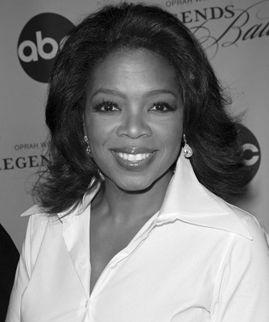
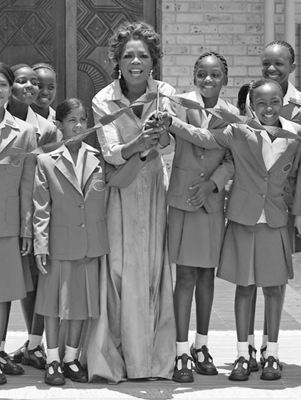

“Hayattaki en büyük sır, aslında büyük bir sırrın olmadığıdır. Hedefiniz her ne olursa olsun, ona sadece çalışarak ulaşabilirsiniz.”
Oprah Winfrey
Oprah Winfrey, medyanın gücüyle dünyayı değiştirmeye soyunan bir melek desek muhtemelen abartmış olmayız. Yapımcısı ve sunucusu olduğu ödül canavarı ‘The Oprah Winfrey Show’ ile reytingleri alt üst ederken, son 20 yıldır milyonlarca izleyiciyi eğlendirip bilgilendiriyor ve üstüne üstlük, pasif TV izleyicilerinden devasa bir yardım ordusu kuruyor. Küresel bir medya ikonu ve hayırsever olarak yaptıklarıyla, daha hayattayken tarihi bir figür olmayı hak etmiş durumda. Bugün o, Amerikan halkının Başkanlarından bile daha çok sevdiği ve güvendiği biri. Başarısının sırrı ise gayet basit: İşini iyi yap, samimi ol ve fayda gözet.
Tek dostu kitaplar oldu
Evlilik dışı beraberlik yürüten bir çiftin kızı olarak 1954’te dünyaya gelen Winfrey, büyük annesi tarafından Kosciusko’da, içinde boru tesisatı bile olmayan bir evde büyüdü. Üç yaşındayken İncil okuyor, kilisede şarkı söylüyordu. Anne ve babası arasında gidip gelerek parçalanmış bir hayat sürdü. Tüm bu zamanlarda yalnızdı ve kendisini sadece kitaplarla avutuyordu. Okulda hocalarına verdiği kıvrak ve muzip cevaplarla kendini göstermeye başlamıştı. Herkesin kafasından aynı şey geçiyordu:
Bu kız çok, ama çok farklıydı.
Okul çapında yapılan güzellik yarışmalarında bile sempatikliği ve kıvrak zekâsıyla adeta ‘ben buradayım’ diyordu.

Oprah Winfrey, medya ile tanıştığında 17 yaşındaydı,
başarılı kariyeri halen devam ediyor.
Medyayla ilk tanışması 17 yaşında olmuştu. Nashville’deki bir yerel radyoyu ziyaret ettiğinde, ondan bir piyes seslendirmesini istediler. Sesi beğenilmişti. Haberleri sunmaya başladı. İki yıl sonra, Tenesse Devlet Üniversitesi’nde ikinci sınıftayken, Nashville’in ilk siyahi televizyon sunucusu olarak işe alındı. Mezun olduktan sonra, Baltimore’daki bir televizyonda muhabirlik yaptı, haber kovaladı. Lakin tarzı, olağan muhabirlerinkinden oldukça farklıydı. Muhabirlerden, haberin önüne geçmemeleri ve her koşulda nötr davranmaları beklenirken Oprah, üzücü haberlerde gözyaşlarını tutamıyor, olay komikse de gülmekten kendini alamıyordu. Ekrandaki bu farklı tarz, giderek daha çok dikkat çekmeye başladı. Halk bu yeni televizyon yüzünü sevmişti. İşte tam bu zaman diliminde, kendisini televizyon tarihine geçiren ilk adımı attı. Sabahları yayınlanan bir talk show sunmaya başlamıştı. Artık kendi programı vardı.
1986’da kendisiyle özdeşleşecek olan The Oprah Winfrey Show’u sunmaya başladı. İki yıl sonra, 32 yaşındayken sunduğu show, pek çok yerde yayınlanmaya başlamış ve dönemin TV starı Phillip John Donahue’nun sunduğu, Amerikan TV’lerinin ilk talk showu Donahue’nin pabucunu dama atmıştı. Oprah, bir silindir gibi, rakiplerini ezip geçiyordu...

Sosyal faaliyetler, Oprah için her zaman önemliydi.
Özellikle kadınlar, bir arkadaş gibi gördükleri Oprah’a hayranlık beslemeye başlamışlardı. Kendisinden önceki showlar, erkeklerin konuk olarak katıldığı ‘söyleşi – konuşma’ şeklinde, bilgi odaklı programlarken; Oprah’ın ‘sohbet-paylaşma-dertleşme ve yönlendirme’ye dayalı samimi yaklaşımı yeni bir tarz yaratmıştı. Üstelik konuşurken eğlendiriyordu da. Diğer programlarda uzman trafiği baş döndürürken Oprah, ekranı ‘sıradan insanlar’a açmıştı. Bu bir devrimdi. Programında, tecavüze uğramış, ama bunu saklayan insanlar, başı uyuşturucuyla derde girmiş çaresizler sırlarını açmaya başlamışlardı. Oprah’la birlikte show, daha yakın, daha kişisel bir hal aldı ve bir tür günah çıkarma merkezine dönüştü. Eğer konuğun hikâyesi duygusalsa Oprah ağlamaya başlıyor ve konuğuna sarılıyordu. Televizyon eleştirmenleri onun için, “Oprah Winfrey, diğerlerinden daha keskin, daha akıllı, daha samimi ve izleyicisine, belki de bütün dünyaya çok daha uyum sağlamış bir TV yıldızı” diyorlardı.
Oprah, TV’nin gücünü görmüştü. İnsanlar televizyonu daha çok özel hayatlarında ve evlerindeyken izliyorlardı. Bu TV büyücüsü siyahi kadın, showunda, bir aile üyesi gibi davranmayı, sanki evinde bir yemek sonrası arkadaşıyla sıradan şeyler konuşuyormuşçasına samimi olmayı başardı. İnsanların yalnızlıklarını paylaştı. Ama bir başka şey daha yapmaya başlamış, kendisine yeni bir misyon edinmişti. Ekranlardan kendisini izleyenlere ‘Bir şeyleri değiştirin!’ çağrısında bulunuyordu.
Peki, Oprah sadece akıl veriyor ve yapılanları kenardan mı izliyordu dersiniz? Hayır! Belki de farkı buydu. Birçok TV yıldızının aksine, sadece izleyici tavlamak için ‘cici ve duyarlı çocuk’ imajı çizmiyor, aynı zamanda elini taşın altına koyuyordu. Nasıl mı?
Oprah: “Eğitim şart”
Oprah, TV’deki ilk günlerinden bu yana -muhtemelen küçük bir çocukken- içinde bulunduğu zor şartlardan kendisini çekip çıkaran eğitimin, özgürlüğe açılan bir kapı olduğu temasını işledi. TV’den kazandığı parayla kurduğu The Oprah Winfrey Foundation (Oprah Winfrey Vakfı) sayesinde, eğitim, çocuk, aile ve kadınların dünya çapında gelişimini destekleyen yüzlerce organizasyona destek oluyor, daha iyi eğitime layık oldukları halde bu imkânı bulamayan öğrencilerin daha iyi şartlarda okuması için milyonlarca dolar bağışlıyor ve okullar yaptırıyor. Kurduğu The Oprah Winfrey Scholars Program (Oprah Winfrey Burs Programı) bünyesinde öğrencilere, Amerika’da ve yurt dışında eğitimlerini tamamlamaları için burslar veriyor. Adeta tek başına Eğitim Bakanlığı gibi çalışıyor!
TV’den kazandığı popülariteyi kitleleri harekete geçirmek için kullanan bu siyahi yıldızın, TV’nin sadece bir aptal kutusu olmadığını, istenirse muazzam bir iyilik silahına dönüştürülebileceğini gösteren çalışmalarından biri de Aralık 2002’de gerçekleşti. “Christmas Kindness South Africa 2002” (Güney Afrika Noel Merhameti) inisiyatifiyle Güney Afrika kırsalındaki okullar tamir ettirildi, 50 bin öğrenciye gıda, giysi, spor ayakkabı, kırtasiye malzemeleri, kitap ve oyuncaklardan oluşan hediyeler verildi. Bu çerçevede 63 okula kütüphane yaptırıldı, öğretmenlere burs verildi. Aynı zamanda Güney Afrika’nın efsane Devlet Başkanı Nelson Mandela’ya verdiği söz gereğince, yine bu ülkede 40 milyon dolara mal olan ‘Oprah Winfrey Liderlik Kız Akademisi’ni hizmete açtı. Akademi, halen Afrika kıtasındaki en yüksek teknolojiye sahip bir bilim merkezi olarak parlak kız öğrencilere yüksek kalitede eğitim imkânı sunuyor.
“Hayatınızda bir şeyler umurunuzda olsun ve onu olumlu yönde değiştirmek için harekete geçin” diyen bu sıradışı TV yıldızı, hayranlık uyandıran misyonuna halen devam ediyor.
NOTLAR